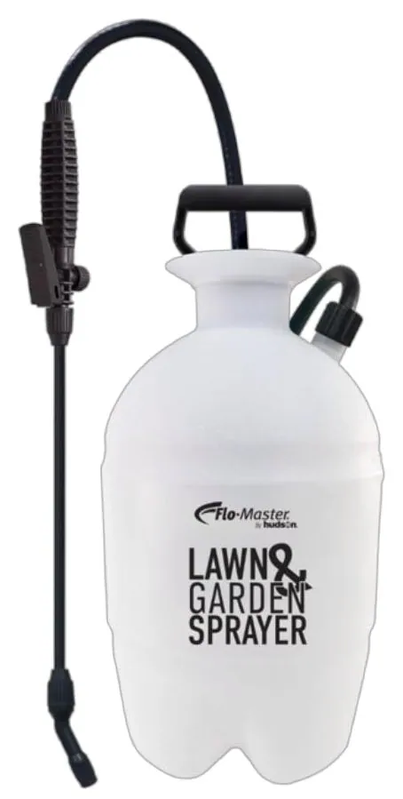
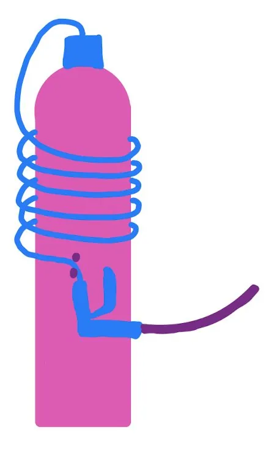
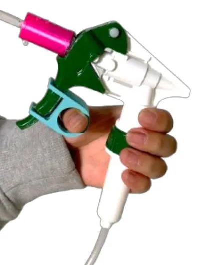
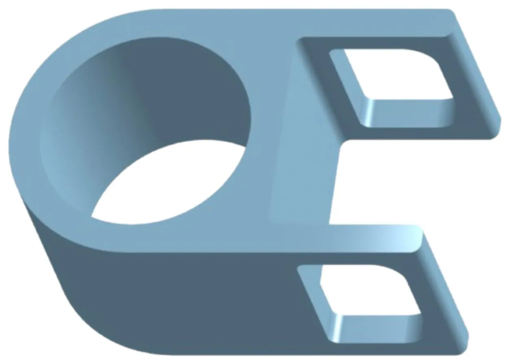
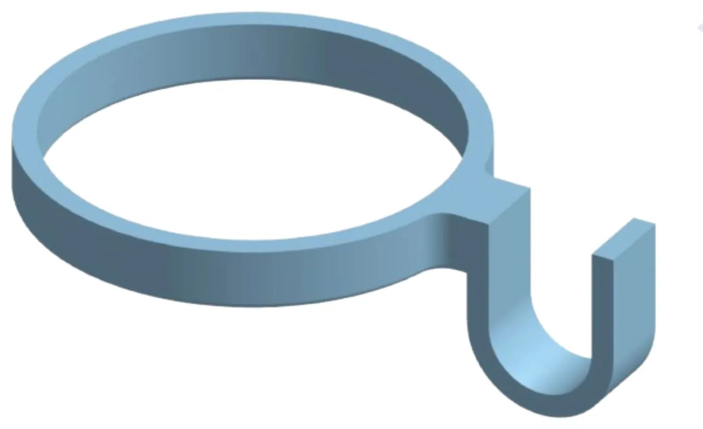
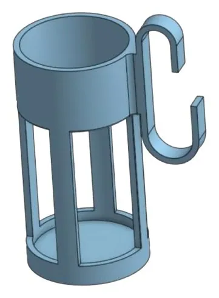
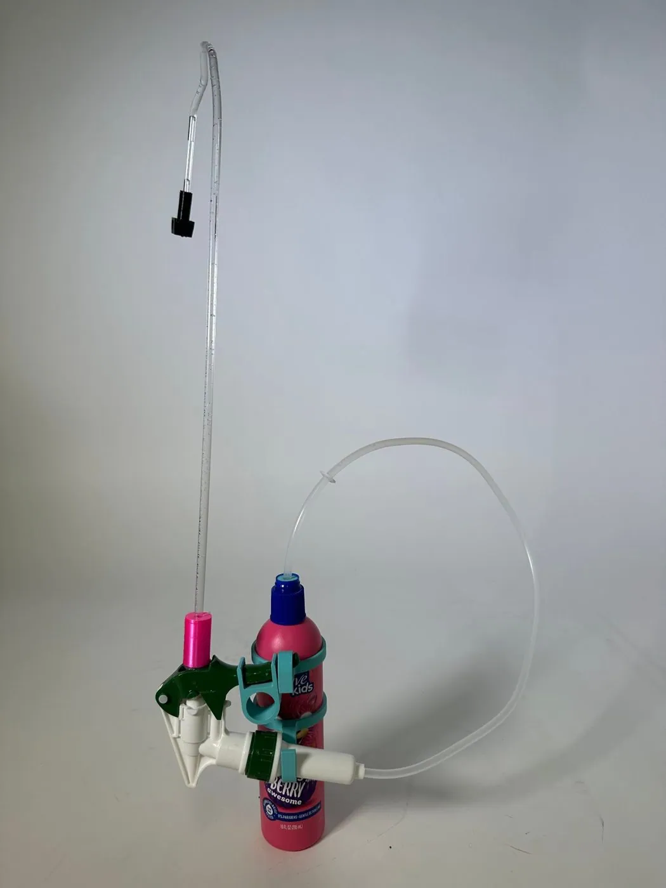
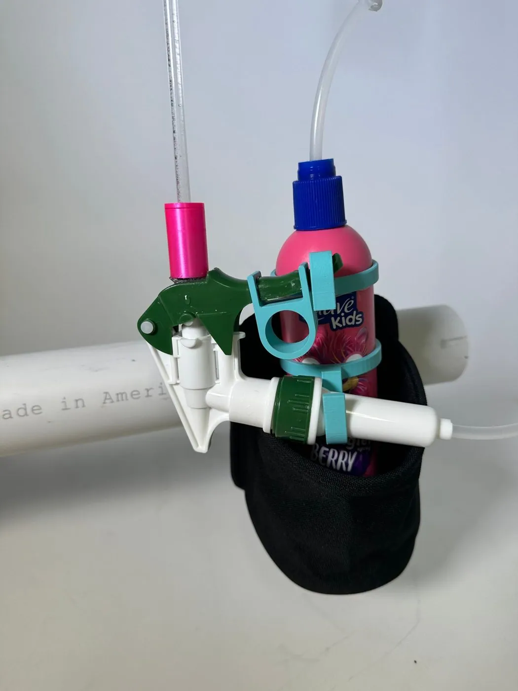
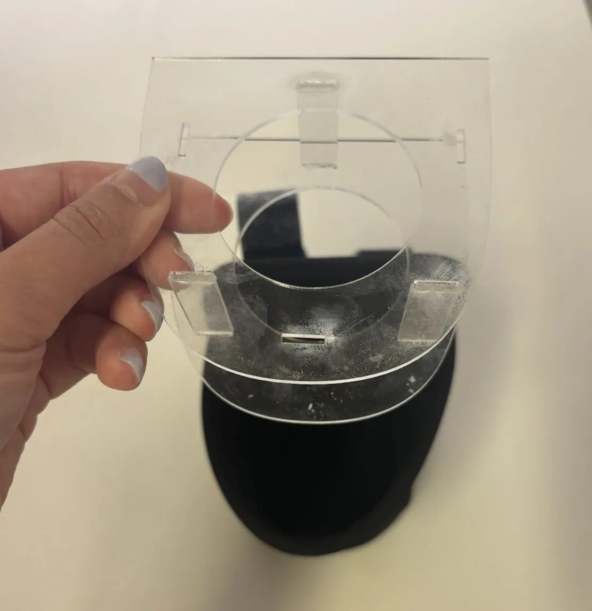

Extendo-Sprayer
ME 40 · Project 2 · with Elizabeth Choi & Grace Jorjorian
Problem: our user couldn’t apply hair detangling spray on her own when getting ready in the morning, because of limited shoulder mobility and hand strength. Our goal was a device that lets her do it independently, within her range of strength and motion.

How it works
- The original trigger is moved off the bottle onto a flexible straw, so it can be held in front of her, where her grip and mobility are best.
- A stiff, curved nozzle straw carries the spray over her shoulder to the back of her head, which is the hardest place to reach and where most tangles are.
- A 3D-printed trigger ring gives her thumb a hold, so the whole hand squeezes instead of one finger.
- Two printed clips hold the trigger on the bottle when it isn’t in use.
- A laser-cut cup-holder insert holds the bottle on her wheelchair arm.
- It screws directly onto her preferred brand of detangler, so there is nothing to refill or transfer.
User Needs → Engineering Requirements
We interviewed the user and her family, ranked her needs, and turned the top ones into measurable targets:
| User need | Importance | Metric | Marginal | Ideal |
|---|---|---|---|---|
| Independent application | 5/5 | Time to set up for first use | 360 s | 60 s |
| Position nozzle at the back of the hair | 5/5 | Nozzle-to-hair distance | 24 cm | 30 cm |
| Ease of activating the trigger | 4/5 | Force to press trigger | 4 N | 1 N |
| Comfortable weight and grip | 4/5 | Torque on shoulder | 3 N·m | 1.5 N·m |
| Safe | 4/5 | Edge radius | 2 mm | 3 mm |
| Low leakage | 3/5 | Loss per use | 3 mL | 0 mL |
| Intuitive | 2/5 | Time to read instructions | 300 s | 30 s |
Ideation
Market research covered products that reach the back of the head (a hands-free hair-dryer stand, a long-reach brush) and products that carry liquid through a tube (a “giraffe” long-straw water bottle). The biggest inspiration was a garden sprayer: a tank connected by a flexible hose to a wand aimed at one spot. We pitched five concepts:
| Concept | Pros | Cons |
|---|---|---|
| Reach extender | Reaches the whole head. A mirror on the back works with her vanity mirror. | Higher holding force, and it doesn’t stay in place. |
| Bottle on a stand | No weight in hand except the trigger. | Bulky, hard to travel with, and she has to reposition her chair often. |
| Giraffe-straw sprayer | Light in the hand, stays positioned, and the bottle’s weight rests on the chair. | Still needs aiming, and a separate trigger adds complexity. |
| Motorized arm | Joystick control, nothing to hold. | Large, expensive, needs power and maintenance. |
| Headband “halo” sprinkler | Sprays most of the hair in one action. | Harder to control where the spray goes. |



Prototyping
We modeled the printed parts in CAD: the nozzle adapter, the two trigger clips, the trigger ring and a cup-holder insert. Then we iterated on fit using the real bottle and trigger.






User Testing
We wrote a testing plan before handing the device over, with pass/fail and scored observations from video:
- Effectiveness: can she press the trigger, get spray out, and reach the back of her hair? Does the nozzle make a mist rather than a stream? Can she follow the instructions without strain?
- Efficiency: time to read the instructions (goal 2:00), time to set up (2:00), time to apply spray (0:45), and the number of trigger presses to prime the device (about 30 on first use).
- Satisfaction: how much she enjoys using it, and how much she likes how it looks.
We also wrote illustrated setup instructions for a caregiver and step-by-step use instructions for the user.
Future directions
- Combine the clips and the acrylic cup-holder supports into one part, so setup is simpler and the bottle is more stable.
- Use semi-rigid tubing for the nozzle extension, so it can be bent and re-aimed.
- Use a smaller trigger with an ergonomic grip, sized for small hands.